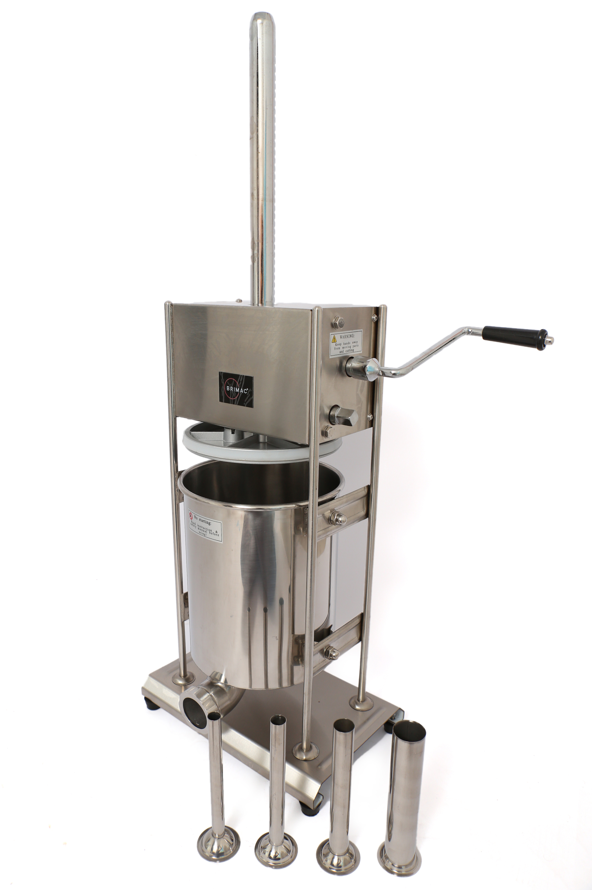
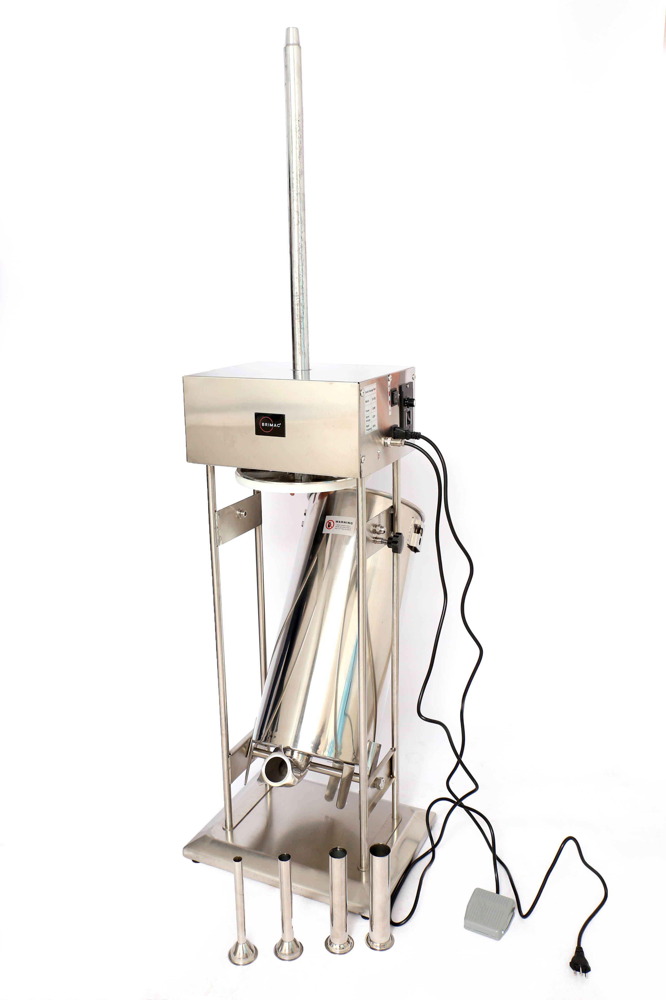
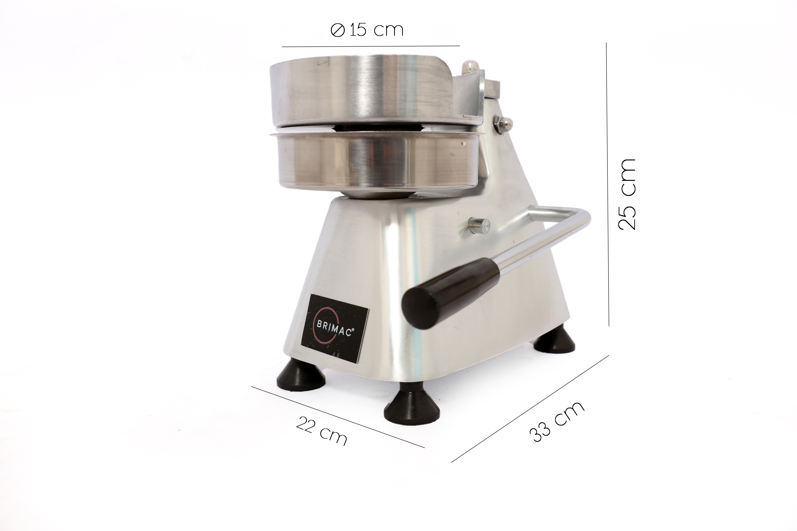
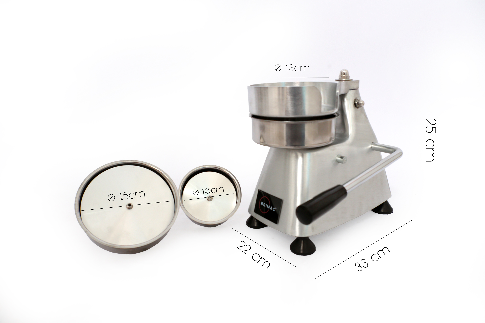
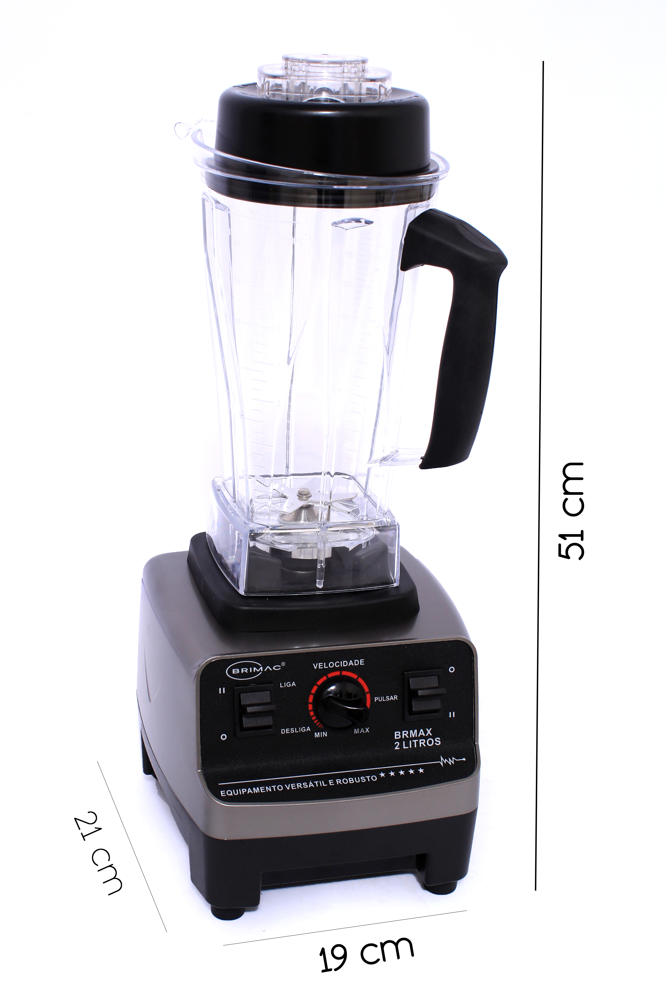
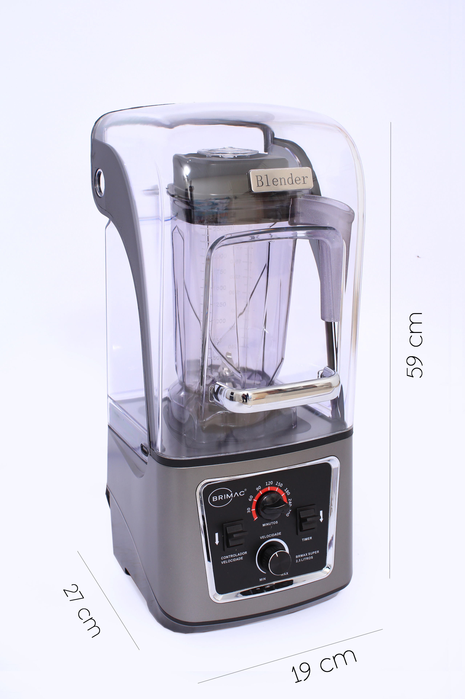
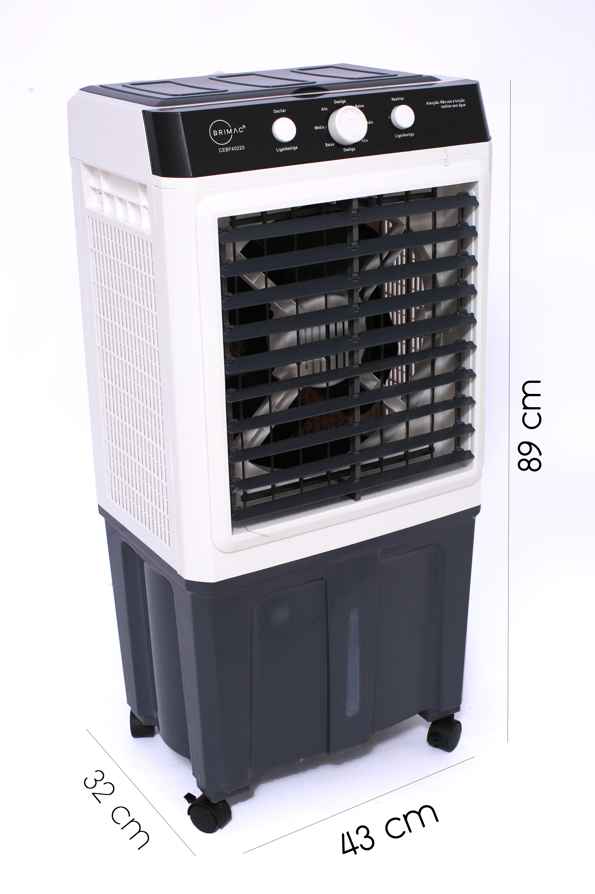

Conheça nossa linha de produtos, nacionais e internacionais, de alta qualidade para diversos setores.

A Ensacadeira Manual BRIMAC foi desenvolvida para oferecer praticidade, durabilidade e excelente desempenho na produção de linguiças artesanais. Fabricada em aço inoxidável e com design vertical, possui moderno sistema de engrenagem do pistão, permitindo abastecimento rápido e operação eficiente.
Ideal para produtores artesanais, restaurantes e pequenas indústrias, acompanha quatro funis em aço inox e conta com duas velocidades de operação para maior produtividade.

A Ensacadeira Elétrica BRIMAC foi desenvolvida para oferecer alto desempenho, praticidade e durabilidade durante o processo de produção de linguiças. Fabricada em aço inoxidável, possui design robusto e moderno, proporcionando excelente desempenho em cozinhas profissionais, açougues, restaurantes e pequenas indústrias.
Equipada com sistema de engrenagem para movimentação do pistão, controle de velocidade e acionamento por pedal, garante maior produtividade, conforto e precisão durante o enchimento.

A Modeladora de Hambúrguer BRIMAC foi desenvolvida para proporcionar agilidade, produtividade e padronização na produção de hambúrgueres. Seu design robusto e funcional permite fabricar hambúrgueres de excelente qualidade de forma prática e rápida.
Produzida com materiais de alta qualidade, possui estrutura resistente, sistema de acionamento manual por manivela e componentes de fácil remoção, facilitando a limpeza e a higienização do equipamento.

A Modeladora de Hambúrguer BRIMAC 3 em 1 foi desenvolvida para oferecer agilidade, produtividade e padronização na produção de hambúrgueres. Seu sistema permite fabricar hambúrgueres em três tamanhos diferentes, atendendo às mais diversas necessidades da sua cozinha ou estabelecimento.
Produzida com materiais de alta qualidade, conta com estrutura robusta, acionamento manual por manivela e componentes de fácil remoção, proporcionando praticidade na limpeza e excelente desempenho durante o uso.

O Liquidificador Comercial BRIMAC foi desenvolvido para oferecer alto desempenho, potência e durabilidade no preparo de alimentos. Seu design robusto, aliado ao motor de alta rotação e à tecnologia de precisão, garante máxima eficiência em cozinhas profissionais, restaurantes, lanchonetes e estabelecimentos comerciais.
Equipado com copo reforçado de 2 litros, regulador de velocidade, função pulsar e lâminas de aço inox de alto desempenho, proporciona praticidade, segurança e excelentes resultados em diversas aplicações.

O Liquidificador Comercial Encapsulado BRIMAC foi desenvolvido para revolucionar o mercado, sendo o único da categoria com copo de 2,5 litros e potência de 2.200 W. Seu projeto une alta performance, robustez e tecnologia de precisão para garantir excelentes resultados no preparo de alimentos.
Além da potência, o equipamento conta com uma cápsula redutora de ruídos, proporcionando um ambiente de trabalho mais silencioso e confortável, sem abrir mão da produtividade.

O Climatizador BRIMAC 40 Litros combina tecnologia, eficiência e durabilidade para proporcionar maior conforto térmico em ambientes residenciais e comerciais. Desenvolvido com alto padrão de qualidade, oferece excelente desempenho na climatização, tornando os espaços mais agradáveis mesmo nos dias mais quentes.
Disponível nas versões 110V e 220V, possui reservatório de grande capacidade, baixo consumo de energia e acompanha três frascos de gel refrigerante para aumentar a eficiência do resfriamento.